Union of tubes and Kakeya sets
Hong Wang's own account of the Kakeya set conjecture in three dimensions, in the order she tells it — with her blackboards, her framings, and the computations left for you to do.
This page follows the first lecture only, which reaches the sticky case and stops. Where her lecture and the Wang–Zahl paper differ in notation or emphasis, the lecture wins and the difference is noted. Nothing here is verified by you yet; the fold-out panels carry the precise statements from the module notes if a claim feels slippery.
§ 1A needle in every direction
A Kakeya set in $\mathbb{R}^n$ is a compact set containing a unit line segment in every direction. The question is how small one can be, and the first surprise is a hundred years old: Besicovitch showed in 1919 that it can have measure zero.
Her sketch of the construction takes fifteen seconds. Take an equilateral triangle — it already contains segments in a whole arc of directions. Cut it into many thin triangles, and slide them sideways so they overlap heavily, "to become like a tree-like structure." Sliding is translation, and directions do not notice translation, so no direction is lost; but the area of the union falls, and it keeps falling as you cut finer.
And this tree structure still contains all the line segments in here. And if you do some calculation, you will see that this measure goes to 0 as you decompose into finer and finer triangles. IHES 1/3, 00:01:42
So measure is the wrong yardstick, and the conjecture is stated in dimension instead: every Kakeya set in $\mathbb{R}^n$ has Hausdorff dimension $n$. She gives the scoreboard in one breath — $n=2$ solved by Davies; $n=3$ the subject of these lectures, with the proof "largely influenced by" Bourgain, Wolff, Katz–Łaba–Tao, Guth, and Katz–Zahl; $n \ge 4$ still open. Her plan for the three lectures: the two-dimensional case first, then the proof splits into the sticky Kakeya set and the general one.
Worth noticing already: the enemy in Besicovitch's construction is not a single clever trick but overlapping at every scale at once. Every hypothesis introduced later in this lecture is an attempt to say precisely how much multi-scale overlapping is allowed.
§ 2Thickening to scale δ
Hausdorff dimension is awkward to compute with, so the first move is to discretise. Fix a small scale $\delta$. A $\delta$-tube $T$ is a tube of radius $\delta$ and length 1 — the $\delta$-neighbourhood of a unit segment. A Kakeya set contains a segment in every direction, so after thickening it contains a tube in every direction; taking a $\delta$-net on the sphere, that is the Kakeya assumption:
A set $\mathbb{T}$ of $\delta$-tubes consists of one $\delta$-tube in every $\delta$-separated direction. (Positions are free — each tube may be translated anywhere.)
Two refinements make the discrete statement strong enough to imply the Hausdorff-dimension one. First, a shading: for each tube $T$ a subset $Y(T) \subseteq T$, which — and this detail matters later — is required to be a union of $\delta$-balls, not an arbitrary subset.
So the word shading is really just a subset of the tube, but we say shading because it's a union of $\delta$-balls, and $\delta$ is like the radius, the minimum side lengths. So that is the difference between shading and subset. IHES 1/3, 00:08:37
Second, its density $\lambda(Y)$, defined by $\sum_{T \in \mathbb{T}} |Y(T)| \approx \lambda(Y)\,|T|\,\#\mathbb{T}$. The regime that matters is $\lambda(Y) \ge \delta^{\eta}$ for a small $\eta$ — shadings that are almost all of each tube. (The genuinely sparse regime, $\lambda \sim \delta^{1/2}$ say, she calls "much more difficult" and not needed here.) With that, the target:
For any $\epsilon>0$, for any $0<\eta<\eta(\epsilon)$, for all $0<\delta<\delta(\epsilon)$: if $\mathbb{T}$ satisfies the Kakeya assumption and $Y$ is a shading with $\lambda(Y) \ge \delta^{\eta}$, then $$\Big|\bigcup_{T\in\mathbb{T}} Y(T)\Big| \;\ge\; \delta^{\epsilon}.$$ By pigeonholing and a classical geometric-measure-theory argument, this implies every Kakeya set in $\mathbb{R}^n$ has Hausdorff dimension $n$.
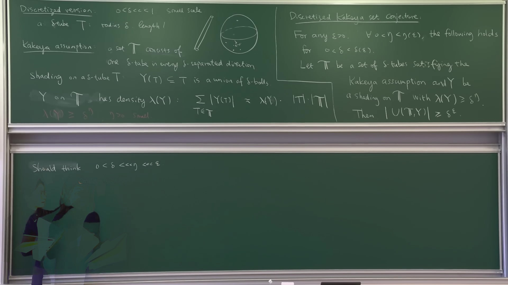
She adds a piece of reading advice that is worth taking:
It's totally fine to not care about shading and to ignore a lot of pigeonholing. If you just want to have a sense of how the argument goes, you could pretend the shading is just the entire tube. A lot of the intuition still holds. IHES 1/3, 00:14:45
Why shadings are not optional, all the same
Asked in the Q&A whether the shading-free statement is interesting on its own, she says no, for two reasons: the shaded version is what recovers Hausdorff (as opposed to Minkowski) dimension, and "the proof involves a lot of refinement, so the shading will come naturally" — the machinery generates shadings whether or not you started with one. The Hausdorff reduction is a pigeonholing over dyadic scales: a cover by balls of many sizes is squeezed until one scale carries a $1/\log$ fraction of every surviving segment, and the shading records what survived. → module kakeya-delta-dictionary, C3
§ 3The hypothesis that won't induct
The Kakeya assumption is the hypothesis every treatment of the problem starts from. Wang's first substantive move is to explain why it is nearly useless.
The proof will proceed by induction on scales: look at the same family through a coarser lens — cover the $\delta$-tubes by fatter $\rho$-tubes, or restrict to the tubes inside one box, rescale, and ask the same question one level up. For that, the hypothesis must survive both operations. It survives neither.
So there is no guarantee that those segments will satisfy the Kakeya assumption. Even if we take a thick tube — then again there is no guarantee that the thin tube contained in this thick tube after the rescaling would satisfy the Kakeya assumption. So this is why this assumption is very difficult to use, and it's very difficult to induct. IHES 1/3, 00:16:23
Restrict a direction-separated family to a small box and you get tube segments, whose directions are whatever happened to pass through that box — no reason to cover a sphere's worth. Rescale the thin tubes inside one fat tube and you get a family that was, by construction, nearly parallel to begin with; after the anisotropic blow-up their directions land wherever they land. In both cases the hypothesis evaporates exactly when it is needed.
This is the hinge of the whole subject. Everything that follows — densities, the two axioms, stickiness — is a search for a hypothesis that is preserved by restriction and rescaling. Read every definition below as an answer to this complaint, and the lecture stops looking like a list of technical conditions.
§ 4What we actually want
Before choosing a hypothesis, be precise about the conclusion it has to buy. For a family of $\delta$-tubes in the unit ball, there are exactly two ways the union can be as large as possible: the tubes are essentially disjoint, so the union is $\#\mathbb{T}\cdot|T|$; or there are so many that they fill the ball, and the union is $\sim 1$. Nothing can beat both. So the best conceivable bound is the minimum of the two:
Find a good assumption on $\mathbb{T} \subseteq B_1$ such that for every shading $Y$ with $\lambda(Y) \ge \delta^{\eta}$, $$\Big|\bigcup_{T\in\mathbb{T}} Y(T)\Big| \;\ge\; \delta^{\epsilon}\,\min\big\{\,\#\mathbb{T}\cdot|T|,\; 1\,\big\}.$$
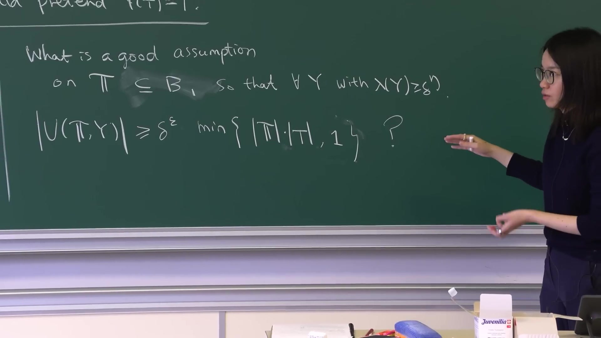
She flags that this is, in a sense, harder than the Kakeya set conjecture: not one bound for one family, but a criterion identifying every family that achieves the best possible bound. The gain is that a criterion can be inducted, and a single family cannot.
§ 5One enemy example
The criterion is read off a single bad configuration. Take a rectangular box $W$ of dimensions $a\times b\times 1$ — the convention throughout is smallest side first, $\delta \le a \le b \le 1$, so that $W$ still holds a tube — and let $\mathbb{T}$ be a maximal set of distinct $\delta$-tubes contained in $W$. ("Distinct" means $|T_1 \cap T_2| \le \tfrac12|T|$; without it one could repeat the same tube forever and no volume bound could hold.)
Compute it yourself — how many tubes fit in the box, and by what factor does the example miss the target?
Two counts multiply: how many directions are available inside $W$, and how many parallel copies fit per direction. Then compare $\big|\bigcup T\big|$, which is at most $|W|$, against the ideal $(\#\mathbb{T})|T|$.
Answer
A tube inside $W$ has its direction confined to an $a \times b$ cap of the sphere; at resolution $\delta$ that is $ab/\delta^2 = |W|/|T|$ directions. Within one direction, disjoint parallel copies are automatically distinct, and the cross-section of $W$ holds another $|W|/|T|$ of them. So $$\#\mathbb{T} \;\approx\; \Big(\frac{|W|}{|T|}\Big)^{2}, \qquad \Big|\bigcup_{T} T\Big| \;\le\; |W|, \qquad (\#\mathbb{T})|T| \;\approx\; \frac{|W|}{|T|}\cdot|W|.$$ The example falls short of the ideal by exactly the factor $|W|/|T|$, which is large as soon as $W$ is much bigger than a tube.
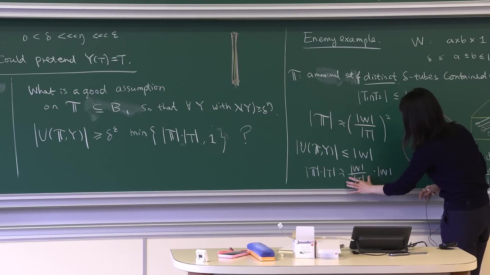
Two remarks she attaches, both load-bearing. The example is not exotic — it is the most obvious way to cheat, and it fails by precisely one quantity. And:
So what we proved can be summarized as: in dimension 2 and 3 — that's the argument that we are going to see for the lectures — this is the only enemy example. And in higher dimensions, there will be other enemy examples. IHES 1/3, 00:25:23
That sentence is probably the honest answer to "why does the proof stop at three dimensions", stated forty minutes before the machinery that would justify it. Nothing later in lecture 1 makes the "only" precise; it is the first question to carry into lectures 2 and 3.
§ 6Density, and two axioms
Name the quantity the enemy failed by. For a family $\mathbb{V}$ of convex sets and a convex $W$, the density of $\mathbb{V}$ in $W$ is
$$\Delta(\mathbb{V},W) \;=\; \frac{\#\{V \in \mathbb{V} : V \subseteq W\}\cdot|V|}{|W|},$$the total volume of the members that fit inside $W$, divided by $|W|$ — "how much of $W$ they would fill if they were disjoint". In the enemy example $\Delta(\mathbb{T},W) = |W|/|T|$ exactly, so the target holds only if density is bounded. That is the axiom, in two readings.
Katz–Tao convex Wolff axioms with error $C$, written $C_{KT}(\mathbb{V}) \le C$: $$\Delta_{\max}(\mathbb{V}) \;=\; \max_{W \text{ convex}} \Delta(\mathbb{V},W) \;\le\; C.$$ An absolute ceiling — no convex set anywhere holds more than its fair share.
Frostman convex Wolff axioms in $W$ with error $C$, written $C_F(\mathbb{V},W) \le C$: $$\Delta(\mathbb{V},W') \;\le\; C\,\Delta(\mathbb{V},W) \quad \text{for every convex } W' \subseteq W.$$ A relative, local condition — whatever $W$'s density happens to be, it is spread evenly inside; no sub-region concentrates.
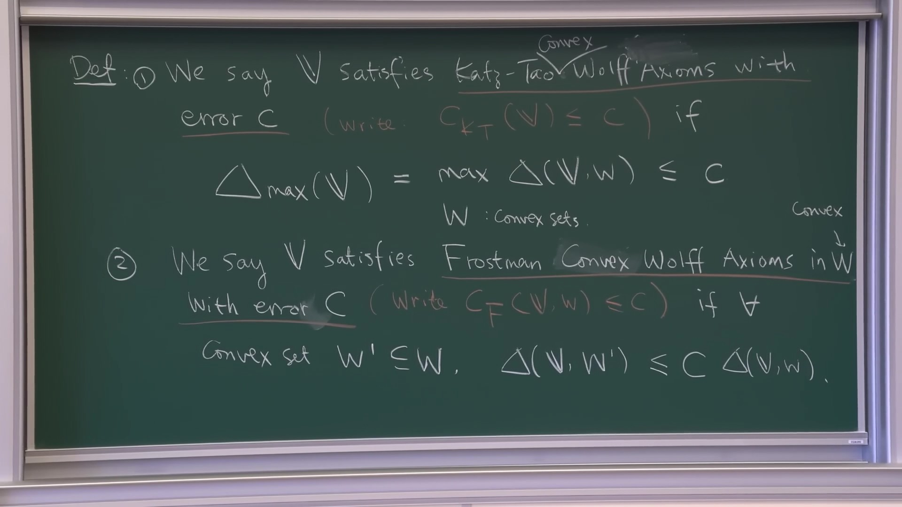
She generalises deliberately: $\mathbb{V}$ is any family of convex sets, because "later, in some of the arguments, we need to consider more general objects" — in practice, either $\delta$-tubes or $a\times b\times 1$ boxes, but the definitions are stated so they survive the substitution. Then the payoff of the whole reformulation:
Previously, when we studied the Kakeya set conjecture, it seems that the Kakeya assumption — which is one $\delta$-tube in each $\delta$-separated direction — is like the key definition. But from our definition notation, this is no longer essential. IHES 1/3, 00:41:41
Her example: the set of all distinct parallel tubes in a single direction $\theta$ satisfies exactly the same two axioms as a Kakeya family. The theorem is trivial for the first and very hard for the second, and the axioms cannot tell them apart — "this definition says that, OK, they should be treated the same way." Separated directions have quietly stopped being the hypothesis.
From the notes — the Kakeya assumption implies both axioms, and where the names come from
Why a Kakeya family satisfies both, with error $\lesssim 1$. For an $a\times b\times1$ box, the number of $\delta$-separated directions available is at most $|W|/|T|$, so $\Delta \le 1$. John's ellipsoid upgrades "box" to "arbitrary convex set" — every convex set is comparable to such a box after doubling. And since $\#\mathbb{T} \approx \delta^{-(n-1)}$ with everything inside $B_1$, the density in the unit ball is $\approx 1$, giving the Frostman constant there. (HW, IHES-1, 00:38:27–00:41:11)
The names. Wolff: his 1995 argument ran on a similar axiom; hers is "just my generalization of Wolff's original". Katz–Tao and Frostman: the two standard ways to discretise a set of Hausdorff dimension $s$ at scale $\delta$ — a Katz–Tao $(\delta,s)$-set counts absolutely, a Frostman $(\delta,s)$-set counts relative to the whole — transplanted from points to families of convex sets. → module wz25-axioms-assertions, HW1–HW5
§ 7The theorem
With the hypothesis fixed, the theorem is the target of §4 with "good assumption" filled in — and each axiom buys one of the two branches of the minimum.
Let $\mathbb{T}$ be a set of $\delta$-tubes in $B_1 \subseteq \mathbb{R}^n$, $n = 2$ or $3$. For any $\epsilon>0$, any $0<\eta<\eta(\epsilon)$ and $0<\delta<\delta(\epsilon)$, and any shading $Y$ with $\lambda(Y) \ge \delta^{\eta}$:
(1) if $C_{KT}(\mathbb{T}) \le \delta^{-\eta}$, then $\big|\bigcup Y(T)\big| \ge \delta^{\epsilon}\,\#\mathbb{T}\cdot|T|$ — essentially disjoint;
(2) if $C_F(\mathbb{T}, B_1) \le \delta^{-\eta}$, then $\big|\bigcup Y(T)\big| \ge \delta^{\epsilon}$ — essentially fills the ball.
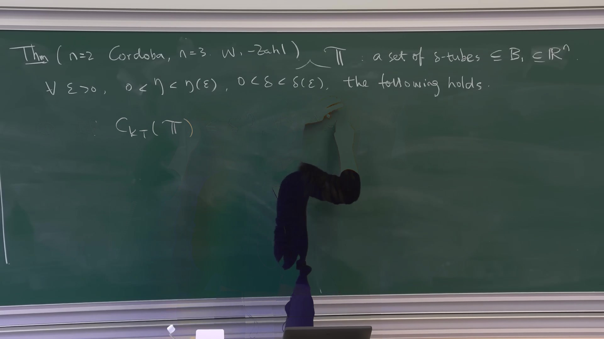
The split is exactly the two readings of density from §6. Bounding density absolutely (Katz–Tao) forbids any convex set from hoarding tubes, which is what "almost disjoint" needs. Bounding it relatively (Frostman) forbids the family from concentrating in any sub-region, which is what "spread over the whole ball" needs. One definition, two conclusions.
§ 8Córdoba's L² argument
The two-dimensional case is a page of Cauchy–Schwarz, due to Córdoba, and she runs it in general $n$ so that the exact point of failure in higher dimensions is visible. Start by integrating the shading's indicator functions over the union and squaring:
$$\Big(\delta^{\eta}\,\#\mathbb{T}\cdot|T|\Big)^{2} \;\le\; \Big(\int_{\bigcup Y}\sum_{T\in\mathbb{T}} \mathbf{1}_{Y(T)}\Big)^{2} \;\le\; \Big|\bigcup_{T} Y(T)\Big| \cdot \sum_{T_1,T_2}\big|Y(T_1)\cap Y(T_2)\big|.$$A lower bound on the union therefore follows from an upper bound on pairwise overlaps. Fix $T_1$ and sort the other tubes by the dyadic angle $\rho \in [\delta,1]$ they make with it. Two facts, both elementary:
If $T_1 \cap T_2 \ne \emptyset$ at angle $\approx\rho$, the tubes stay together for length $\delta/\rho$, so $|T_1\cap T_2| \approx (\delta/\rho)\,\delta^{n-1}$. And $T_2$ then lies inside the $\rho$-neighbourhood of $T_1$ — which is a convex set, so this is where the axiom gets spent:
$$\#\{T_2\} \;\lesssim\; \delta^{-\eta}\,\frac{\rho^{\,n-1}}{\delta^{\,n-1}} \ \ \text{(Katz–Tao)}, \qquad\text{or}\qquad \#\{T_2\} \;\lesssim\; \rho^{\,n-1}\,\#\mathbb{T} \ \ \text{(Frostman)}.$$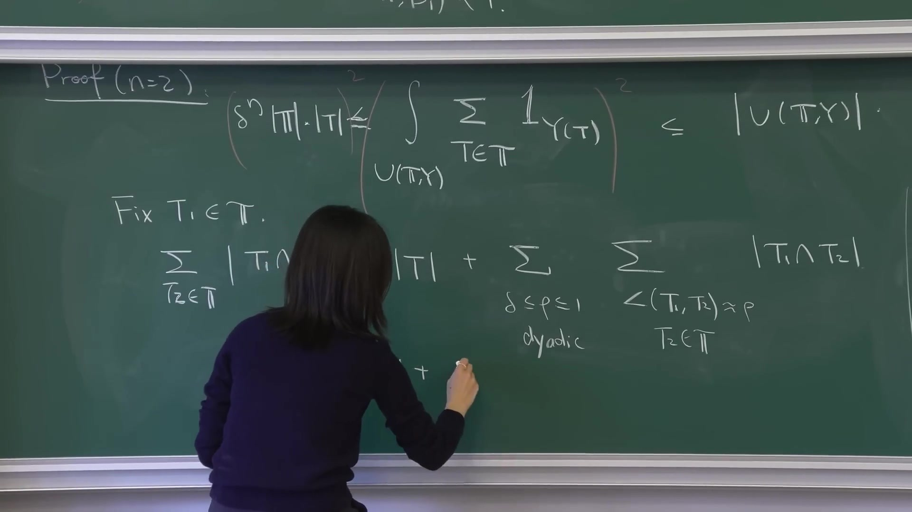
Compute it yourself — multiply the two, sum over dyadic ρ, and find where n = 2 is special
Per angle scale the contribution is (size of one intersection) × (number of such $T_2$). Multiply, decide which $\rho$ dominates, then compare the result against the $|T|$ coming from $T_2 = T_1$.
Answer
Katz–Tao branch: $\frac{\delta}{\rho}\delta^{n-1} \cdot \delta^{-\eta}\frac{\rho^{n-1}}{\delta^{n-1}} = \delta^{1-\eta}\rho^{\,n-2}$. The exponent of $\rho$ is $n-2 \ge 0$, so the sum over the $\sim\log(1/\delta)$ dyadic scales is dominated by the largest angle $\rho \approx 1$ and equals $\approx \delta^{1-\eta}$ — the $\rho$-dependence cancels exactly when $n=2$, and for $n>2$ the largest scale wins by a margin that costs powers of $\delta$. Frostman branch: $\frac{\delta}{\rho}\delta^{n-1}\cdot\rho^{n-1}\#\mathbb{T} = \delta^{n}\rho^{\,n-2}\#\mathbb{T}$, same structure. Feeding either back through Cauchy–Schwarz gives the theorem for $n=2$ and a strictly weaker bound for $n = 3$.
She is asked about exactly this from the floor at 00:54:05 — "so $\rho$ disappears in the first case because $n$ equals 2?" — and answers no, it does not disappear; the point is that the exponent is non-negative for all $n\ge2$, which is what lets the largest angle dominate.
Her summary of the situation is flat: "this works nicely when $n$ is 2, but not so nice when $n$ is greater than 2." The $L^2$ method sees only pairs, and in $\mathbb{R}^3$ pairs are not enough.
§ 9Two claims to carry upstairs
Before leaving the plane she extracts two consequences of the same $L^2$ argument, "a good place to give exercise", and flags that both are used later in three dimensions. They are the reusable form of Córdoba's method.
Let $T$ be a $\delta$-tube with shading $Y(T)$ (a union of $\delta$-balls), and for each ball $Q \subseteq Y(T)$ let $T_Q$ be a tube through $Q$ making angle $\approx 1$ with $T$. Then $C_{KT}(\{T_Q\}) \lesssim 1$.
Her proof is a counting argument you can see: a convex box $W$ containing some of the $T_Q$ must itself cross $T$ transversally; the $T_Q$ inside $W$ are indexed by the shading balls lying in $W \cap T$, a segment whose length is about the width of $W$; and each ball carries only one $T_Q$. So the count is bounded by the box's width measured in tube units — which is exactly what the axiom asks for.
Let $S$ be a $\delta\times1\times1$ slab with a dense shading, $|Y_0(S)| \ge \delta^{\beta}|S|$, and suppose that through every $\delta$-ball $Q \subseteq Y_0(S)$ there is a slab $S_Q$ transverse to $S$. Then for any dense shading, $\big|\bigcup S_Q\big| \ge \delta^{C\eta}$.
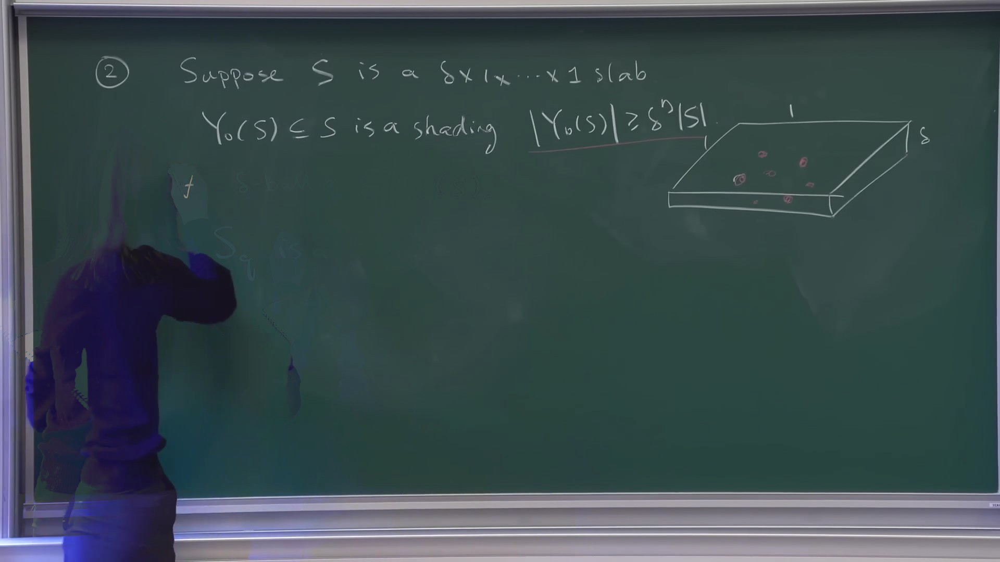
What is striking is her candour about what the claim does not give:
But you might wonder, what kind of Wolff axioms does this $S$ satisfy? Unfortunately, I cannot really tell you. But what we know is the following. Or — unfortunately, I don't know. But we do know something. IHES 1/3, 01:03:35
The volume bound holds even though the family's clustering behaviour is unknown. The proof uses $L^2$ plus Claim 1 plus one extra idea: choose a random line $L$ meeting many of the shading balls transversally; then the slabs sitting over the balls of $L$ do satisfy the Katz–Tao axiom, by Claim 1 again, and such a line exists by averaging. Both claims hold in every dimension; the case that gets used is the $\delta\times1\times1$ slab in $\mathbb{R}^3$.
§ 10Wolff, 5/2, and Heisenberg
Now the three-dimensional problem. Wolff proved in 1995 that a Kakeya set in $\mathbb{R}^n$ has dimension at least $\frac{n+2}{2}$, hence $5/2$ in $\mathbb{R}^3$; the bound stood, improved only by "a very tiny number", for a quarter century. Her account of why is the sharpest thing in the lecture, and it takes two observations.
First: Wolff's proof uses only axioms of the kind in §6, so it works for lines over any field — "not only in $\mathbb{R}^n$, but also in $\mathbb{C}^n$." Second: over $\mathbb{C}$ the bound is attained. The witness is the Heisenberg group, found by Katz, Łaba and Tao:
$$H \;=\; \big\{\,|z_1|^2 + |z_2|^2 - |z_3|^2 = 1\,\big\} \;\subseteq\; \mathbb{C}^3 .$$Compute it yourself — the real dimension of H, and how many complex lines it contains
Three counts. (a) $\dim_{\mathbb{R}} H$, viewing $\mathbb{C}^3$ as $\mathbb{R}^6$. (b) The complex lines through the point $p = (1,0,0)$ that lie inside $H$ — substitute and see what the equation becomes. (c) The dimension of the whole family of complex lines in $H$, by counting incidences $\{(p,\ell) : p \in \ell \subseteq H\}$ twice.
Answer
(a) $H$ is one real equation in $\mathbb{R}^6$, so $\dim_{\mathbb{R}} H = 5$.
(b) At $p=(1,0,0)$ the equation localises to $|z_2|^2 - |z_3|^2 = 0$, a cone; the complex lines through $p$ inside it are $\{(1,\theta z, z) : z \in \mathbb{C}\}$ with $|\theta| = 1$ — a one-real-dimensional family.
(c) Incidences have dimension $5 + 1 = 6$; each complex line contributes a $2$-real-dimensional set of points, so the lines are overcounted by $2$: $\dim_{\mathbb{R}}\{\text{lines in } H\} = 5+1-2 = 4$.
And a Kakeya set in $\mathbb{R}^3$ carries a $2$-dimensional family of lines; complexifying doubles exponents, $2\times2 = 4$. So $H$ has exactly the incidence structure of a three-dimensional Kakeya set, satisfies the convex Wolff axioms, and realises $5/2$ precisely.
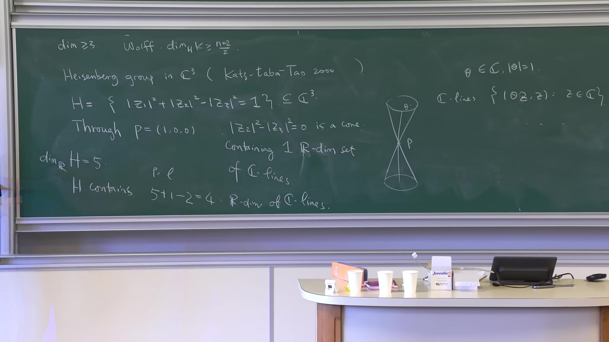
The consequence is a constraint on any possible proof: an argument that beats $5/2$ in $\mathbb{R}^3$ must use something that fails over $\mathbb{C}$. No refinement of the axioms, no cleverer incidence count, nothing that treats lines formally, can work — because all of it would apply verbatim to $H$, which is a genuine counterexample at $5/2$. She says the proof will use "crucially" that we are in $\mathbb{R}^n$.
The same Katz–Łaba–Tao paper contributes the other half of the lecture. They showed that a Kakeya set in $\mathbb{R}^3$ of Minkowski dimension exactly $5/2$ must be sticky, grainy and plany — and, she notes, the Heisenberg group is itself sticky. So the enemy is sticky, which sets the plan: kill the sticky case first, then use it as a base for the general one.
In fact, we discovered that the idea of sticky sets is present in a much larger class of problems in projection theory and geometric measure theory. IHES 1/3, 01:14:47
§ 11Axioms at every scale
Stickiness is the hypothesis §3 was asking for. Getting to it takes one piece of bookkeeping first.
Uniformity. Fix the scales $\rho = \delta^{j\eta}$ for $j = 1,\dots,\eta^{-1}$ — a ladder of intermediate scales between $\delta$ and $1$. At each, cover the family by $\rho$-tubes: $\mathbb{T} = \bigsqcup_{T_\rho \in \mathbb{T}_\rho} \mathbb{T}[T_\rho]$, where $\mathbb{T}[T_\rho]$ is the set of $\delta$-tubes inside $T_\rho$. Call $\mathbb{T}$ $\delta^{\eta}$-uniform if at every such scale the load $\#\mathbb{T}[T_\rho]$ is the same for all $T_\rho$, up to constants — so that $\#\mathbb{T} \approx \#\mathbb{T}_\rho \cdot \#\mathbb{T}[T_\rho]$. Any family contains a uniform subfamily of comparable size, by pigeonholing, so uniformity is free and assumed from here on.
A $\delta^{\eta}$-uniform family $\mathbb{T}$ is $\delta^{\eta}$-sticky if $$\Delta_{\max}(\mathbb{T}_\rho) \;\le\; \delta^{-\eta} \qquad\text{for every } \rho = \delta^{j\eta},$$ that is, if $C_{KT}(\mathbb{T}_\rho) \lesssim 1$ at every intermediate scale. Her own gloss: "$\mathbb{T}$ satisfies Katz–Tao Wolff axioms at all scales" — "$\delta^{\eta}$-sticky is just shorter."
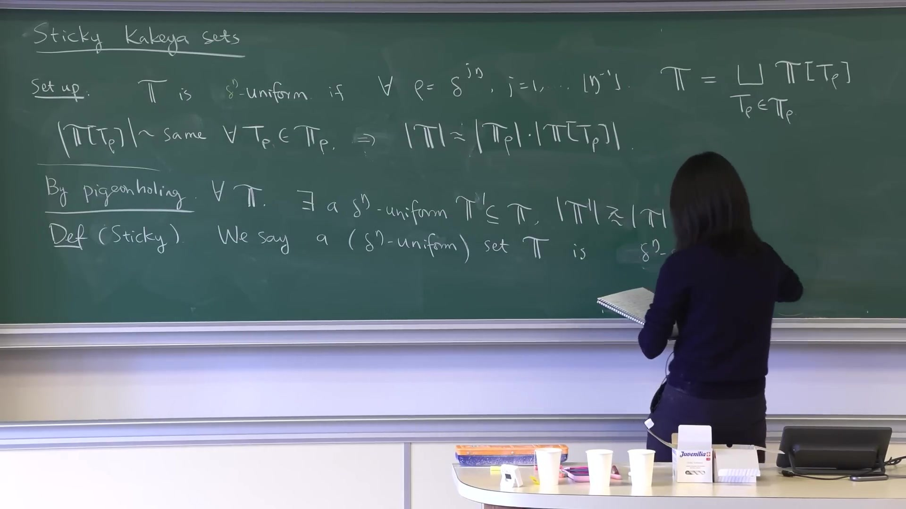
The difference from the plain axioms is a single quantifier — "just whether it's at all scales, or just for $\mathbb{T}$" — and that quantifier is the whole point:
So a sticky set of $\delta$-tubes is particularly good for induction, because it's still sticky — maybe to a less extent — after thickening, and also it's still sticky after restricting to a thick tube, after taking all the thin tubes inside a thick tube. So this notion overcomes the issue we talked about. IHES 1/3, 01:28:37
Both $\mathbb{T}_\rho$ and each rescaled $\mathbb{T}[T_\rho]$ are again sticky. The two operations that destroyed the Kakeya assumption in §3 now preserve the hypothesis. That is the entire justification for the definition, and it took the lecture an hour to earn it.
§ 12The sticky Kakeya theorem
For any $\epsilon>0$, any $0<\eta<\eta(\epsilon)$ and $0<\delta<\delta(\epsilon)$: if $\mathbb{T} \subseteq B_1$ is $\delta^{\eta}$-sticky, then for every shading $Y$ on $\mathbb{T}$ with $\lambda(Y) \ge \delta^{\eta}$, $$\Big|\bigcup_{T \in \mathbb{T}} Y(T)\Big| \;\ge\; \delta^{\epsilon}.$$
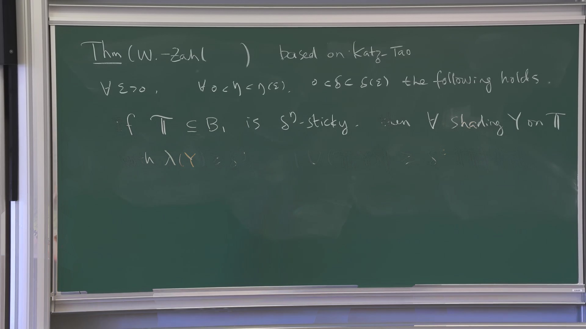
Asked whether the sticky case is used to prove the general one, she is precise about the division: the first half of the ideas will be reused in detail, the second half is specialised to stickiness — "the sticky Kakeya theorem, we are going to use it as a black box to prove the general case."
She then sketches one reduction, which is worth recording because a version of it reappears in the paper's endgame. The theorem may be assumed with the extra hypothesis $\#\mathbb{T} \approx \delta^{-2}$ — the full Kakeya cardinality in $\mathbb{R}^3$ — even though a sticky family might be much smaller. The device is randomisation: if $\Delta_{\max}(\mathbb{T}) \le \delta^{-\eta}$, then there are about $\delta^{-2}/\#\mathbb{T}$ rigid motions $r_k$ such that $\mathbb{T}_0 = \bigcup_k r_k\mathbb{T}$ has $\#\mathbb{T}_0 \approx \delta^{-2}$ and still $\Delta_{\max}(\mathbb{T}_0) \lesssim \delta^{-\eta}$.
Why the random copies don't conspire — her counting reason
"When we consider those maximum density, we are taking max over all set of rectangular boxes. But in reality, the collection of rectangular boxes we are considering is only polynomials of $\delta^{-1}$… But when we take those random rigid motions, there is this exponential that dominates." A union bound over polynomially many test boxes against exponential concentration from independent random motions. Applied scale by scale up the ladder, with the $\eta$-spacing widened so the losses don't compound. (HW, IHES-1, 01:36:28–01:42:20) → module sticky-kakeya, HW3
§ 13Refinement, multiplicity, grains
The last twenty minutes are, in her words, the part that "will be used later, so we should go through it carefully". Three definitions and one inequality.
Refinement. $Y'$ is a $\lambda$-refinement of $Y$ if $Y'(T) \subseteq Y(T)$ for every tube and the density stays within a factor $\lambda$ — in practice $\lambda \approx 1$, meaning "we threw away almost nothing".
Multiplicity. $\mu_{\mathbb{T}}(Y) = \sum_T |Y(T)| \big/ \big|\bigcup_T Y(T)\big|$, morally the number of tubes through a typical point. The theorem of §7 is equivalent to the bound $\mu \lessapprox \delta^{-\epsilon}$, so from here the goal is an upper bound on multiplicity rather than a lower bound on volume.
Then the observation that makes refinement free — and it runs in the direction that first looks wrong:
$$\mu_{\mathbb{T}}(Y) \;\lessapprox\; \mu_{\mathbb{T}}(Y') \;=\; \#\mathbb{T}_{Y'}(x) \quad\text{for every } x \in \bigcup_T Y'(T).$$Multiplicity increases under refinement, up to a logarithm — she anticipates the objection ("you might ask why the multiplicity in some sense increases after refinement; it should be decreased") and answers it: because the refinement is by a factor $\approx 1$, the numerator barely drops while the denominator can drop as much. And after the right refinement the middle quantity is not a typical-point heuristic but a literal count at every point of the refined union. Hence one may refine as often as one likes, boundedly many times, and only ever bound the refined multiplicity.
We feel much safer to take refinements, because no matter how many refinements we are going to take, as long as it's bounded many times, and each time is roughly one, then it suffices to bound this term instead of this term. And our main goal is to bound the multiplicity. So that's why throughout the argument, sometimes I was just replacing $Y$ by refinements without even saying it. IHES 1/3, 01:51:34
Grains. Now look at the thin tubes inside a thick one. A $\delta$-tube crossing a $\rho$-tube leaves a segment of length $\delta/\rho$; call these segments — of dimensions $\delta \times \delta \times \delta/\rho$ — the grains $G$, write $\mathcal{G}$ for their collection, and shade them by $Y(G) = \bigcup_{T \supseteq G} Y(T) \cap G$, the shading inherited from every tube through them. With one more round of pigeonholing — that the count $\#\mathbb{T}[T_\rho]_Y(x)$ is essentially the same for all points $x$ and all $\rho$-tubes — the multiplicity factorises:
$$\mu(\mathbb{T},Y) \;\lessapprox\; \mu\big(\mathbb{T}[T_\rho],Y\big)\cdot\mu(\mathcal{G},Y).$$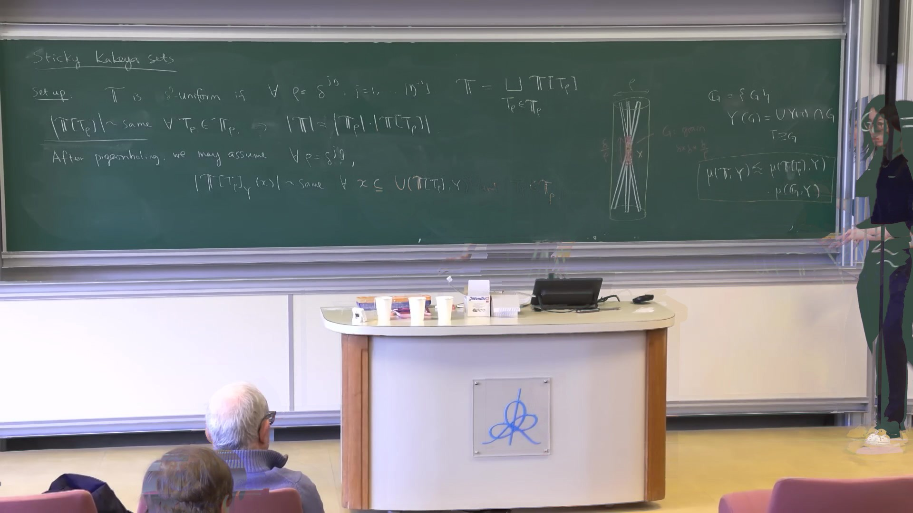
Read it as: the tubes through a point are counted by first counting inside one thick tube (fine), then counting how many thick-tube-patterns reach that point (coarse). The two factors are estimated by different means, and every later argument in the subject is an attempt to bound one of them. She underlines the reach of it:
And this decomposition, we are going to see it again and again… We are going to see it in the sticky Kakeya proof. We're also going to see it in the general proof — just this simple decomposition, and how to make sense of it is via this pigeonholing and refinement. IHES 1/3, 01:57:57
Two things to carry forward. The factorisation is not a device invented for the hard case — it is introduced here, before the sticky theorem is even proved, as the standing tool of both proofs. And what makes it an inequality between well-defined quantities, rather than a slogan about typical points, is exactly the refinement apparatus above.
§ 14Self-improvement
The lecture ends by naming the shape of the induction. For $\beta \ge 0$, let $K_{\text{sticky}}(\beta)$ be the statement: for any $\epsilon>0$ and suitable $\eta,\delta$, if $\mathbb{T}$ is $\delta^{\eta}$-sticky with $\#\mathbb{T}\approx\delta^{-2}$ and $Y$ is a $\delta^{\eta}$-dense shading, then
$$\mu_{\mathbb{T}}(Y) \;\le\; \delta^{-\beta-\epsilon}.$$$K_{\text{sticky}}(2)$ holds trivially. The theorem to prove is $K_{\text{sticky}}(0)$. And the engine is a self-improving implication: $K_{\text{sticky}}(\beta) \Rightarrow K_{\text{sticky}}(\beta-\nu)$ for some $\nu>0$, whenever $\beta>0$.
Why carry both $\beta$ and $\epsilon$, when they play the same role? Her answer is pure bookkeeping, and it is the reason the paper's assertions have two parameters too: the extra $\epsilon$ makes $\{\beta : K_{\text{sticky}}(\beta) \text{ holds}\}$ a closed set, so that the improvement can be iterated to its infimum without ever tracking how small $\nu$ is. Openness comes from the implication, closedness from the formulation, and the interval collapses to $\beta = 0$.
This is where lecture 1 stops — the statement is set up and the machinery named, but the implication itself is lectures 2 and 3. Her closing line: "starting from next time, I'm going to talk about the argument."
From the questions
The discussion afterwards produced three things worth keeping.
Why not $L^3$? If Cauchy–Schwarz gives pairwise intersections, why not cube and use triples? Her answer names the real obstruction: "already in $\mathbb{R}^3$ a typical intersection is empty, and it's more empty if we intersect with another one… the difficulty is that you don't know when it's empty. So you can only use the worst possible scenario. And so this is a very bad bound, even with this in $\mathbb{R}^3$. It's even worse with three." Raising the exponent does not help when the information you lack is which intersections vanish.
Dimension 4? Asked whether she believes the conjecture there: "I think the sticky case should be. Sticky case is true. General, I'm not sure yet."
What did we learn? Asked what a non-expert should take from the proof: "I think we sort of understand how to estimate the union of tubes in $\mathbb{R}^3$… previously we don't really know how to study union of tubes." And the reason it matters beyond itself — tubes are the supports of wave packets, the pieces a solution to a Schrödinger or wave equation decomposes into; a family of conjectures in harmonic analysis implies Kakeya, and so does Montgomery's conjecture on large values of Dirichlet series in number theory. "So we really hope it's true."
How to read this, and what it is made of
The intended use of this page is that you read it and then write your own summary, unaided — which is why it deliberately contains no takeaway boxes and no section conclusions. The compute-it-yourself panels are the experiment gate: a claim you have instantiated on one worked example is a claim you own.
Sources. Everything attributed to her comes from a corrected transcript of the IHES lecture, timestamped against the video; the blackboards are keyframes from the same capture, and each figure here was checked by eye before being used. The mathematics not attributed to her comes from Wang–Zahl, Volume estimates for unions of convex sets, and the Kakeya set conjecture in three dimensions (arXiv:2502.17655), and from the module notes behind this page — those are reachable through the fold-out panels, which quote them.
What is not yet verified. Nothing on this page has been checked by you; the module notes still carry unchecked boxes. Two of the background modules are reconstructions of standard arguments rather than extractions from a source, and are flagged as such. Where the lecture and the paper disagree in emphasis, this page follows the lecture.
What is missing. Lectures 2 and 3 — the passage from sticky to general, the factoring of convex sets, the grains decomposition with Guth's plates, and the endgame. When those captures land, this page gains parts VI onward.